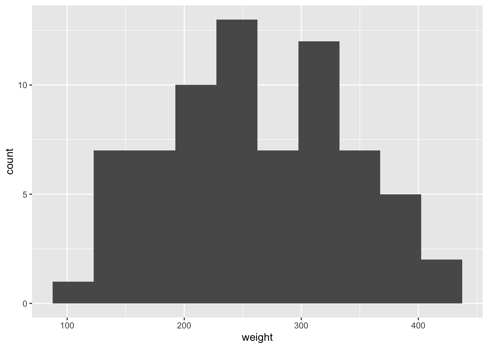
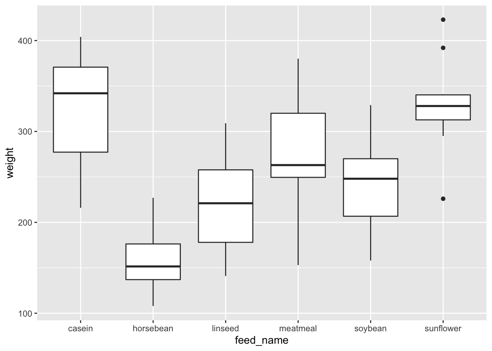
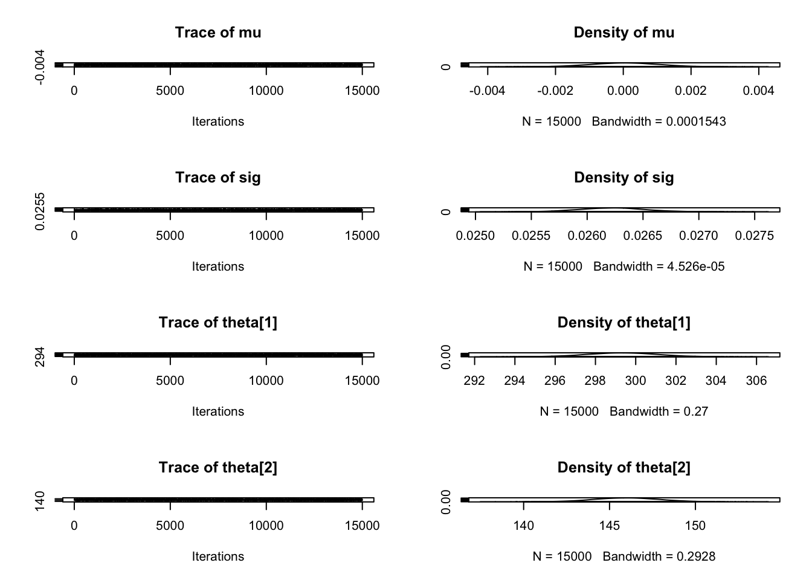
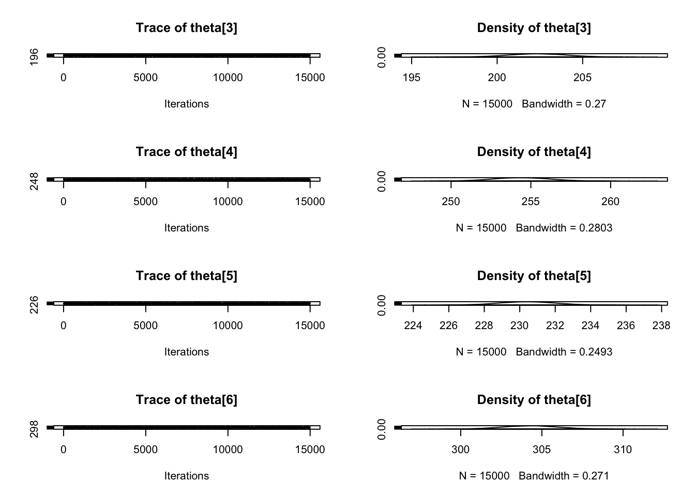

library(tidyverse)
library(rjags)Loading required package: codaLinked to JAGS 4.3.1Loaded modules: basemod,bugssource("funcs.R")Quarto enables you to weave together content and executable code into a finished document. To learn more about Quarto see https://quarto.org.
When you click the Render button a document will be generated that includes both
library(tidyverse)
library(rjags)Loading required package: codaLinked to JAGS 4.3.1Loaded modules: basemod,bugssource("funcs.R")data = datasets::chickwts %>%
mutate(
feed_name = feed,
feed = as.numeric(feed)
)You can add options to executable code like this
head(data) weight feed feed_name
1 179 2 horsebean
2 160 2 horsebean
3 136 2 horsebean
4 227 2 horsebean
5 217 2 horsebean
6 168 2 horsebeantable(data$feed_name)
casein horsebean linseed meatmeal soybean sunflower
12 10 12 11 14 12 ggplot(data, aes(x=weight)) +
geom_histogram(bins = 10)
ggplot(data, aes(x=feed_name, y=weight, group=feed_name)) +
geom_boxplot()
mod.base = lm(weight ~ feed_name + 0, data=data)
summary(mod.base)
Call:
lm(formula = weight ~ feed_name + 0, data = data)
Residuals:
Min 1Q Median 3Q Max
-123.909 -34.413 1.571 38.170 103.091
Coefficients:
Estimate Std. Error t value Pr(>|t|)
feed_namecasein 323.58 15.83 20.436 < 2e-16 ***
feed_namehorsebean 160.20 17.35 9.236 1.91e-13 ***
feed_namelinseed 218.75 15.83 13.815 < 2e-16 ***
feed_namemeatmeal 276.91 16.54 16.744 < 2e-16 ***
feed_namesoybean 246.43 14.66 16.810 < 2e-16 ***
feed_namesunflower 328.92 15.83 20.773 < 2e-16 ***
---
Signif. codes: 0 '***' 0.001 '**' 0.01 '*' 0.05 '.' 0.1 ' ' 1
Residual standard error: 54.85 on 65 degrees of freedom
Multiple R-squared: 0.9629, Adjusted R-squared: 0.9595
F-statistic: 281.4 on 6 and 65 DF, p-value: < 2.2e-16mod_string = " model {
for (i in 1:length(weight)) {
weight[i] ~ dnorm(theta[feed[i]], sig)
}
for (j in 1:max(feed)) {
theta[j] ~ dnorm(mu, tau)
}
mu ~ dnorm(0, 1e6)
prec.tau ~ dgamma(1/2.0, 1*3.0/2.0)
prec.sig ~ dgamma(2/2.0, 2*1.0/2.0)
tau = sqrt( 1.0 / prec.tau )
sig = sqrt( 1.0 / prec.sig )
} "
set.seed(43)
data_jags = as.list(data)
params = c("theta", "mu", "sig")
mod.1 = run_sim(
model.str = mod_string,
data = data_jags,
params = params
)Warning in jags.model(file = textConnection(model.str), data = data, n.chains =
n_chains): Unused variable "feed_name" in dataCompiling model graph
Resolving undeclared variables
Allocating nodes
Graph information:
Observed stochastic nodes: 71
Unobserved stochastic nodes: 9
Total graph size: 165
Initializing modelplot(as.mcmc(mod.1$csim), ask=FALSE)

(dic.1 = dic.samples(mod.1$obj, n.iter=1e3))Mean deviance: 6278
penalty 5.719
Penalized deviance: 6283 round(mod.1$coefs, 4) mu sig theta[1] theta[2] theta[3] theta[4] theta[5] theta[6]
0.0000 0.0262 299.3197 145.9932 202.3472 254.4034 230.4219 304.2791 The echo: false option disables the printing of code (only output is displayed).